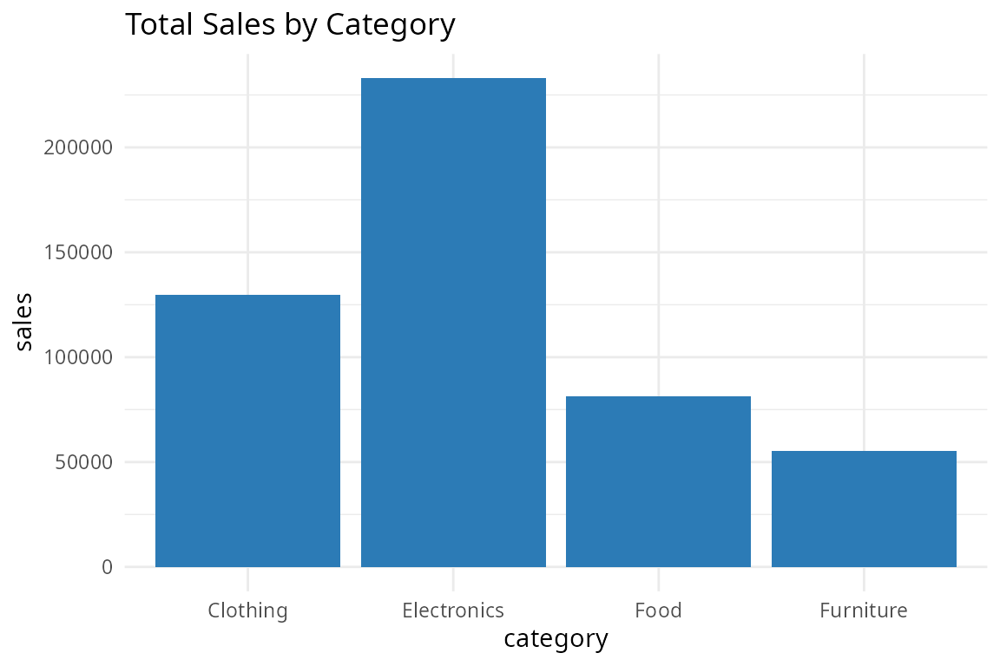

Introduction to prestr
intro-to-prestr.RmdWhat is prestr?
prestr helps you turn data into PowerPoint presentations
directly from R. It provides three functions: summarize data, generate
charts, and export to .pptx — all in a few lines of
code.
The Data
data(sales_data)
head(sales_data)
#> month category sales profit units_sold
#> 1 January Electronics 15200 4200 152
#> 2 February Electronics 13400 3800 134
#> 3 March Electronics 16800 4900 168
#> 4 April Electronics 14200 3900 142
#> 5 May Electronics 17500 5100 175
#> 6 June Electronics 19200 5800 192Summarize
summarize_insights(sales_data)
#> column min max mean median
#> 1 sales 2900 28900 10395.83 8150
#> 2 profit 700 9100 2863.54 2050
#> 3 units_sold 58 815 291.27 263Visualize
category_totals <- aggregate(sales ~ category, data = sales_data, FUN = sum)
auto_chart(category_totals, x = "category", y = "sales",
chart_type = "bar", title = "Total Sales by Category")
Export to PowerPoint
create_ppt_report(
data = category_totals,
title = "Sales Report",
subtitle = "By Category",
output_file = "sales_report.pptx"
)The .pptx file is saved to your working directory, ready
to open in PowerPoint or Google Slides.